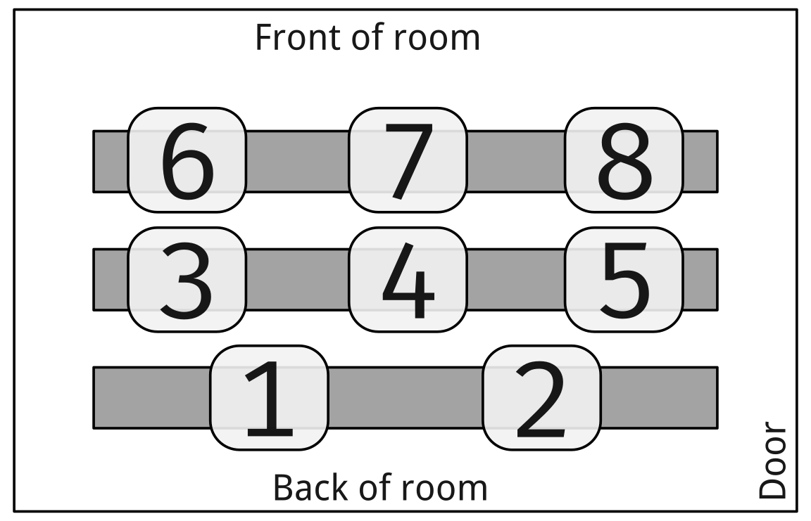

Given the starting table called rev, what
is the output of the last query?
name
num
A
1
B
2
C
3
D
4
E
5
CREATE TEMP TABLE rq AS (
SELECT
name,
SUM(num) OVER () -
LAG(num) OVER (ORDER BY name DESC)
AS Q
FROM rev
);
SELECT name FROM rq
WHERE Q = 11;
Subqueries
A subquery is simply a query embedded within another piece
of SQL
Commonly used to prepare some data or compute a value to be used by
the surrounding SQL
We have already seen very simple versions
Creating a new table, for example
CREATE TABLE |||new table||| AS (
SELECT * FROM |||og table|||
);
Often, you could have saved the subquery as its own table and then
used that directly, but not always
Common Uses of Subqueries
Computing a single value to use in comparisons
Computing a single column or list of values to use either directly
in a table or in comparisons
Performing “join-like” operations (potentially in a more flexible
manner)
Filtering one table based on the contents of another table
Otherwise combining operations that would otherwise have taken
several steps
Filter on single value
Think back to HW3 where you needed to filter out all the outlier
taxi-ride speeds
There you had to compute the quartiles, the whisker edges, and then
filter directly by tying that number back in
Subqueries can combine those steps! You can directly compare a
value to the subquery so long as the query outputs only a single
value (one row, one column)
SELECT *
FROM |||table|||
WHERE |||column||| > (
SELECT avg(|||column 2|||)
FROM |||table 2|||
);
Derived Tables
You can use the output of a subquery anywhere you would normally
reference a table name
Such a table is then called a derived table
You must give such subqueries a table alias,
else you have no way to refer to them
SELECT *
FROM (
SELECT |||column 1|||, |||column 2|||
FROM |||table|||
) AS mytable;
Repeating Column Values
Sometimes it is very useful to have a constant value assigned to an
entire column
We can’t just use an aggregate function (or similar) though, else we
get mismatched column lengths
You can include a subquery in your selected columns if it
outputs only a single value
That value will be propagated to all the rows
Give it an alias so the column heading has some meaning!
SELECT
|||column 1|||,
|||column 2|||,
(SELECT avg(|||column|||) FROM |||table 2|||) AS avg_col
FROM |||table|||;
Subquery Expressions
Can also use subqueries to filter based on whether certain content
is present within the subquery output
All of the following are comparisons that return a boolean
Combinations of a keyword followed by the subquery
|||expr||| IN (|||subquery|||) and
|||expr||| NOT IN (|||subquery|||)
EXISTS (|||subquery|||) and
NOT EXISTS (|||subquery|||)
|||expr||| |||op||| ANY (|||subquery|||)
|||expr||| |||op||| ALL (|||subquery|||)
|||expr||| is a column name or value, and
|||op||| is a boolean operator
(=,>,>=,etc)
All subquery expressions are evaluated in short-circuit mode: they
will return an answer as soon as they can
IN Subquery
Will check to see if a term appears anywhere in the subquery
output
The subquery must output a single column (though it
could be empty)
NOT IN just reverses the situation
Be careful of NULLs
1 IN (1,2,3) gives True
1 IN (2,3) gives False
1 IN (NULL,2,3) gives
NULL
Most dangerous with NOT IN, since
1 NOT IN (NULL,2,3) will give
NULL, not True
EXISTS Subquery
Checks just to see if the subquery has any rows
in the output
No expression to compare to, just looking at subquery output
The contents of the subquery do not matter at all, so a
simple SELECT 1 FROM ... is usually
used
Subqueries using EXISTS are frequently
a form called a correlated subquery, where it references the
table in the outer query
SELECT |||column 1|||, |||column 2|||
FROM |||table 1|||
WHERE EXISTS (
SELECT 1
FROM |||table 2|||
WHERE |||table1|||.|||column1||| = |||table2|||.|||column2|||
);
ANY and ALL
At times you don’t want to see if a value is in the
subquery output, but rather how it compares to the output
A boolean expression needs to return a single True or False
though
ANY and ALL
“broadcast” the boolean comparison across all the subquery rows
ANY will return True if any of
the rows evaluate to True with the expression
ALL will only return True if all
of the rows evaluate to True with the expression
|||expr||| = ANY (|||subquery|||) is thus
identical to expr IN (subquery)
SELECT |||column 1|||
FROM |||table|||
WHERE |||column 1||| < ALL ( SELECT |||column||| FROM |||table 2|||);
Subqueries vs Joins
You may have realized that subqueries can do many similar things to
what we used joins for!
When should each be used?
Subqueries are great when you only need information from a single
table, but it depends on another table
Joins are necessary when you need information from multiple
tables
Historically, most RDMS were better optimized for joins, but many
have improved substantially in recent years for subqueries
If in doubt, use the form that makes the most sense for what you
semantically want to accomplish. You can always convert it
later if better optimization is needed and could be achieved
Be careful!
It can be pretty easy to leap off the deep end with subqueries
Always keep in mind what you want the subquery to achieve, and test
it individually to make sure it is doing what you expect
Use them where they fit the needs of the situation
A nice aspect of subqueries is that you can work from the
“bottom-up”, starting with smaller subqueries you know and building on
them
Organize your queries nicely!
This becomes even more important with subqueries
Activity
Subquery Grades
I’ve prepped a simple grades database here that you can
download and run the sql file to create a
subq1 schema in your database of choice which
will contain three common tables: roster,
assignments,
submissions
See if you can answer the first two questions below without
using any joins. (You can use them on the third, as it gets
crazy otherwise I think)
Which student(s) have turned in nothing?
Which assignment name has the worst raw scored average overall?
Which students scored below average on every quiz?
Today’s Groups
Group 1: Dayton, Harleen, Finn
Group 2: Michael, Haley, Jack
Group 3: Evan, Aurora, Connor
Group 4: Mallory, AJ, Nick
Group 5: Matthew, Sam H, Tippy
Group 6: Myles, Sam J, Hannah, Marcus
Group 7: Grace, Jerrick, Tiffany
Group 8: Sergio, Jordan, Greg

Group Areas
Solutions
Which student(s) have turned in nothing?
One student: Frederick Moore
Which assignment name has the worst raw scored average overall?
Homework 4
Which students scored below average on every quiz?